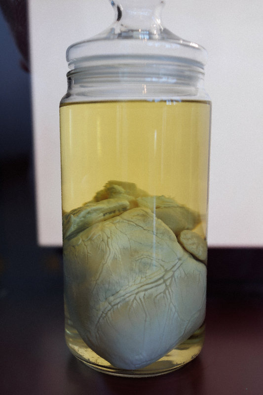

Neredeyse tamamlanmış bir koleksiyonum var; birçok mükemmel parçadan oluşuyor. Yine de tamamlanması için doldurulması gereken bazı boşluklar bulunuyor. Hayal edebileceğinden çok daha fazlasını takdir etmenin ve bağışlamanın bir göstergesi olarak yardımını istiyorum. Aşağıdaki parçalardan herhangi birini bulursan şu anda elinde olduğunu kanıtlayan bir fotoğraflı mesajı e-postama gönder. Tüm gönderim masraflarını karşılayacak ve hayatımın eserini tamamlamama yardım edenlere para ödülü vereceğim.
KSh385@hg84h6vgs6mjmba1249d.ann
1. Kronik Zayıflama Hastalığı nedeniyle ölmüş, herhangi bir boyutta bir geyikgiller üyesi
Büyüleyici, her zaman ölümcül ve günümüzde tedavisi olmayan bir hastalık. Bulunduğum yerde rastlamak çok zor; başka yerlerde de birileri fark edip kaldırılması için av koruma görevlisine bildirmeden önce izini sürmek güç.
Lütfen hayvanı hastalığa tamamen yenik düşene kadar sakla, ardından bedenini belirtilen malzemeleri kullanarak gönder.
2. Üzerindeki metal takılar artık çıkarılamayan, şişmanlamış el parmakları
Eskimiş bir zaman kapsülü. Bu uzuv uzun zaman önce değerli bir eşyayı üzerine geçirecek kadar inceydi; artık çıkarılması düşünülemeyecek kadar büyüdü.
İster geniş parmağı sıkarak incelten bir alyans ister yağ dokusuyla çevrelenmiş birkaç yüzük olsun, ikisi de koleksiyonum için kusursuz olur.
3. Çok başlı doğmuş ve 5 kg'dan ağır herhangi bir varlık
Son derece nadir ve gerçekten değerli bir parça; stokumun en seçkin yerlerinden birini hak eder.
Vaktim dolmadan bunu edinme umuduyla arama alanımı genişlettim. Ancak daha da nadir olan craniopagus parasiticus durumunu bulabilirsen büyük çaban ve şansın karşılığında seni cömertçe ödüllendiririm.